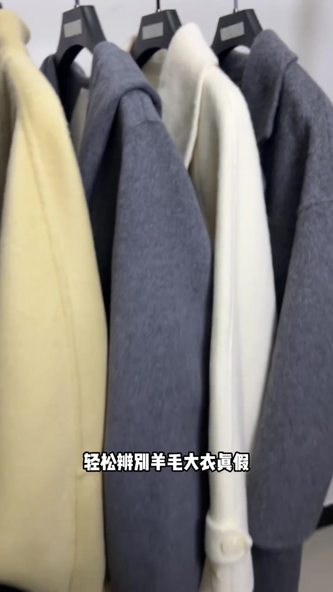
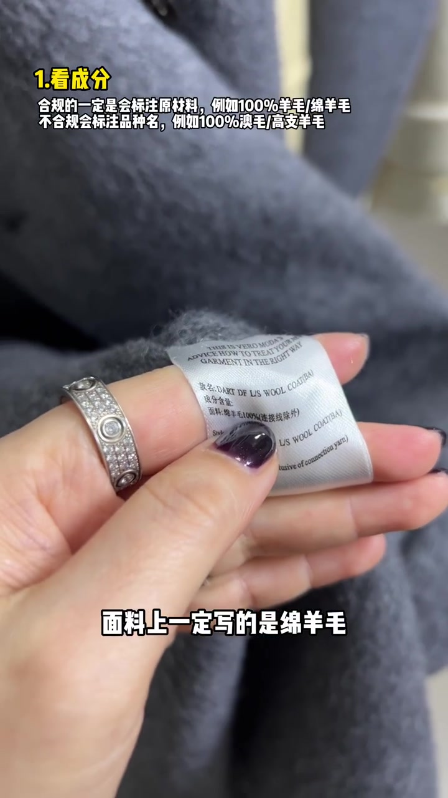
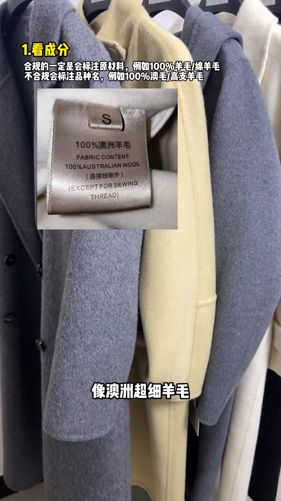
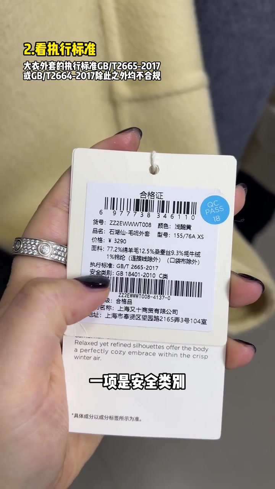
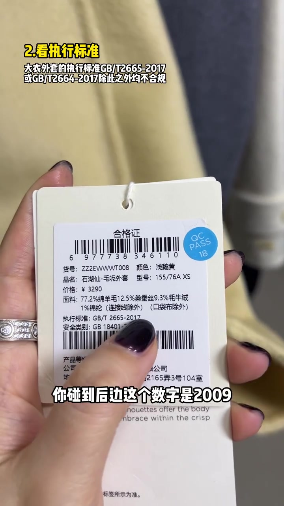
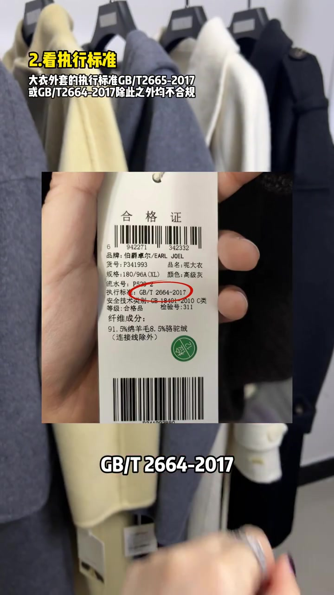
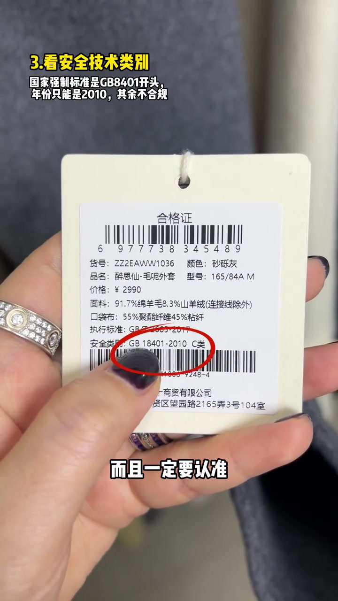
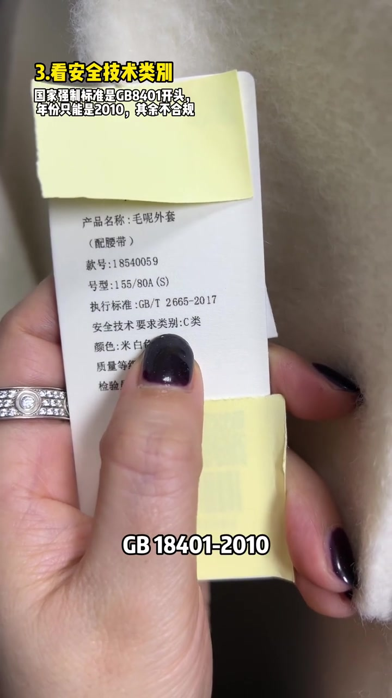

开场：假的都是假的，先抓吊牌和水洗标
视频一上来连喊三遍“假的”，随即叠字落到主题：轻松辨别羊毛大衣真假。镜头扫过一排挂架上的毛呢大衣，主讲人说这一招就看吊牌和水洗标。
可见字幕校正：Whisper 把“吊牌”听成“吊盆”，“绵羊毛”听成“棉羊毛”，“GB/T”听成“JBT”。下文按画面叠字与吊牌实拍叙述，文末转录区仍保留原始分段。

第一步：水洗标只认原材料写法
先看水洗标。主讲人举起一件灰色大衣的成分标：VERO MODA 款式下写着“面料：绵羊毛 100%（连接线除外）”。叠字同步强调——合规一定标注原材料，例如 100% 羊毛 / 绵羊毛。
反例随即出现：标签写“100% 澳洲羊毛 / 100% AUSTRALIAN WOOL”。画面说明，不合规会标注品种名，例如 100% 澳毛、高支羊毛；像“澳洲超细羊毛”这类写法也不规范。
口播立场：“一律按假货看待，宁可错杀，不可被骗。”
这是主讲人的筛查立场，不是实验室成分检测结论；它要求标签用语回到原材料，而不是产地或支数营销词。


第二步：执行标准只认准 2665 / 2664-2017
镜头切到吊牌（合格证）。叠字写明：大衣外套执行标准是 GB/T 2665-2017 或 GB/T 2664-2017，除此之外均不合规。主讲人先举起浅鹅黄女装吊牌，手指点到“执行标准：GB/T 2665-2017”。
她特别提醒：年份若是 2022、2010 之类，直接毙掉；若后面数字是 2009，别当成很多年前的尾货——按她的说法就是假货，再便宜也不要买。
男装同样要警惕。画面转到一排挂架，再举起伯爵卓尔男装呢大衣吊牌，红圈框住“执行标准：GB/T 2664-2017”。



第三步：安全类别必须有 GB 18401-2010
最后看安全类别。叠字写：国家强制标准以 GB18401 开头，年份只能是 2010，其余不合规。画面先给砂砾灰外套吊牌，红圈框住“安全类别：GB 18401-2010 C类”。
随后举到另一件米白色外套吊牌——上面有执行标准 GB/T 2665-2017，安全技术要求只写“C类”，没有完整写上 GB 18401-2010。主讲人结论：吊牌、水洗标都没有明确标注这一项的，不是次品就是假货。
边界提示：视频把“标签是否写全强制标准号”当作店内快筛；它不替代实验室成分鉴定，也不覆盖所有外套品类的全部执行标准。

